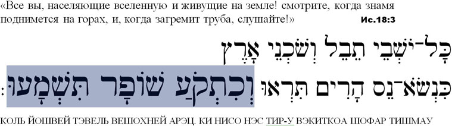

Когда загремит ШОФАР – СЛУШАЙТЕ !
Пророк обращается ко всем концам вселенной и к каждому народу, и человеку. Контекст этого пророчества говорит о судах Божьих и восстановлении Израиля в последние времена.
Шофар предстает здесь не еврейской фольклорной традицией, близкой к уничтожению, но великим символом и действием для всех живущих на земле.

Композитор: Даниэль Круглов. Из цикла "Недельные главы Торы"
Правильный перевод: «…когда загремит шофар – слушайте!» - КИТКОА ШОФАР ТИШМАУ (произношение на иврите можно послушать здесь)
Что значит СЛУШАЙТЕ?
Что значит НААСЕ ВЕНИШМА (ивр. букв.: сделаем и услышим)? (Исх.24:7)
Какого действия ожидает от нас Всевышний, когда говорит: "ШМА ИСРАЭЛЬ!"
Типа – прослушайте информацию? Наши корреспонденты сообщают, будто Господь есть Бог?
Нет, Он говорит – услышьте! Будьте послушны слышаному вами, послушны Моему голосу.
משמעת \ МИШМААТ \ - послушание, дисциплина משמע \ МИШМАА \ - слух, слушание, послушание, значение, смысл
שם \ ШЕМ \ слово того же корня \ – это не просто кличка, которую слышит и откликается человек. ШЕМ – производит нечто с человеком, если он МУШМАА – послушен ему. ИМЯ – то, что (в идеале) определяет и выражает призвание человека, делает его тем, каков он замыслен Творцом.
«…когда загремит шофар – будьте послушны!»
\
Повеление слушать голос шофара – важнейшая заповедь праздника ЙОМ ТРУА (Праздник Трубления Шофара (традиция называет его – РОШ а-ШАНА)).
Слушать шофар - не просто не затыкать ушей или находиться поблизости с трубящим шофаром. СЛУШАТЬ – значит приготовить свое сердце, смириться пред Творцом в послушании.
Праздничное трубление в мессианской общине "Охалей Рахамим" / Хайфа, Израиль. Эфраим Калиш /шофар/, Ширли Мазин /скрипка/, Рами Мазин /пиано/